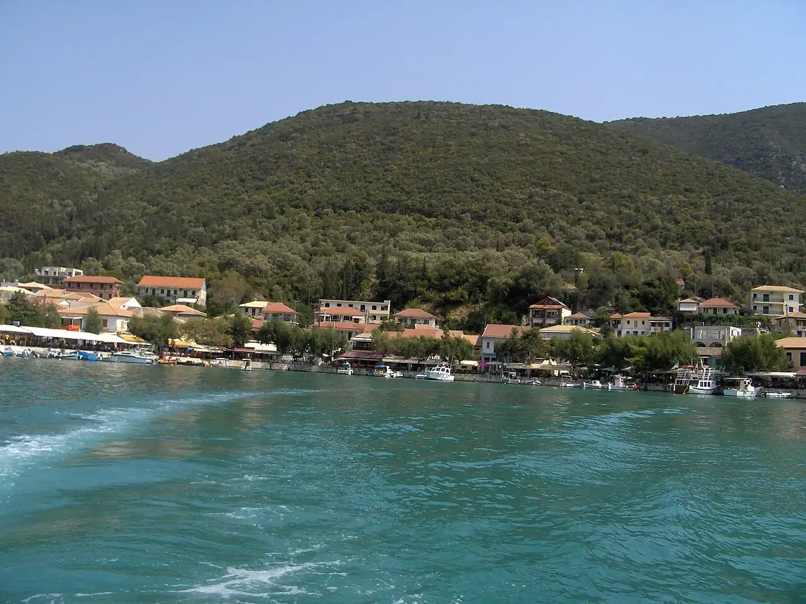

Vassiliki
Lefkada, Grèce · windsurf

Baie du sud de Lefkada où un vent thermique régulier se lève presque chaque après-midi en été. Matinées calmes pour apprendre, après-midis soutenus pour les confirmés : un classique du windsurf européen.
- Lieu
- Lefkada, Grèce
- Niveau
- Variable selon les conditions
- Activités
- windsurf
- Type d'eau
- Mer / océan
- Coordonnées
- 38.63, 20.60 (position approximative du secteur)
Dangers à connaître
- Vent thermique fort et rafaleux l’après-midi, plus soutenu au large.
- Ferries et bateaux près du port de Vassiliki.
Le conseil d'Ocean Buddy
Apprends le matin sur l’eau plate et laisse les après-midis venteux aux planchistes autonomes.
Ouvrir dans Ocean Buddy Télécharger sur l'App Store
Source : Fiche Ocean Buddy · septembre 2026 · à vérifier localement.